Dragon God Descent
RedShiftWyrm enters the world as a cosmic gravity event. Reality bends, terrain breaks, and the world learns something beyond ordinary gods has arrived.
Gravity is my whim. Reality is my throne.
A dark fantasy archive following RedShiftWyrm’s descent, Rhagnvyr’s conquest across regions, and the Apostles transformed through gravity, power, and divine contract.
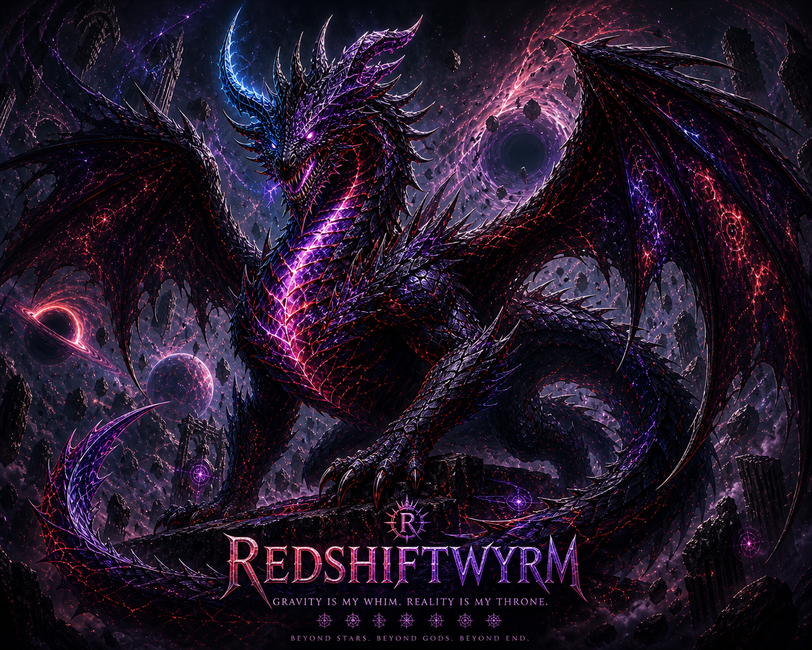
The public-facing spine of the world so new readers understand the arc without needing every development note.
RedShiftWyrm enters the world as a cosmic gravity event. Reality bends, terrain breaks, and the world learns something beyond ordinary gods has arrived.
Rhagnvyr is the humanoid manifestation of RedShiftWyrm, carrying gravity, dominance, crimson-violet energy, and sovereign pressure into kingdoms, clans, courts, and war zones.
Zeravyr defines the first major apostolic direction: selected, transformed, marked, and rewritten into a living extension of RedShiftWyrm's will.
The battlefield arc proves Rhagnvyr's magic is environmental. Gravity Shackle bends terrain, crushes formations, and turns the battlefield itself into a weapon.
The northern arc expands through wolf-clan hierarchy, followers, territorial loyalty, and the difference between factional strength and true Apostles.
The eastern arc shifts from battlefield pressure into courts, sky routes, dancers, spies, harpy heights, and elite social influence networks.
These are the current visual and lore anchors for the RedShiftWyrm project.
The mythic brand core. RedShiftWyrm represents gravity, transformation, dominance, cosmic destruction, and divine selection.
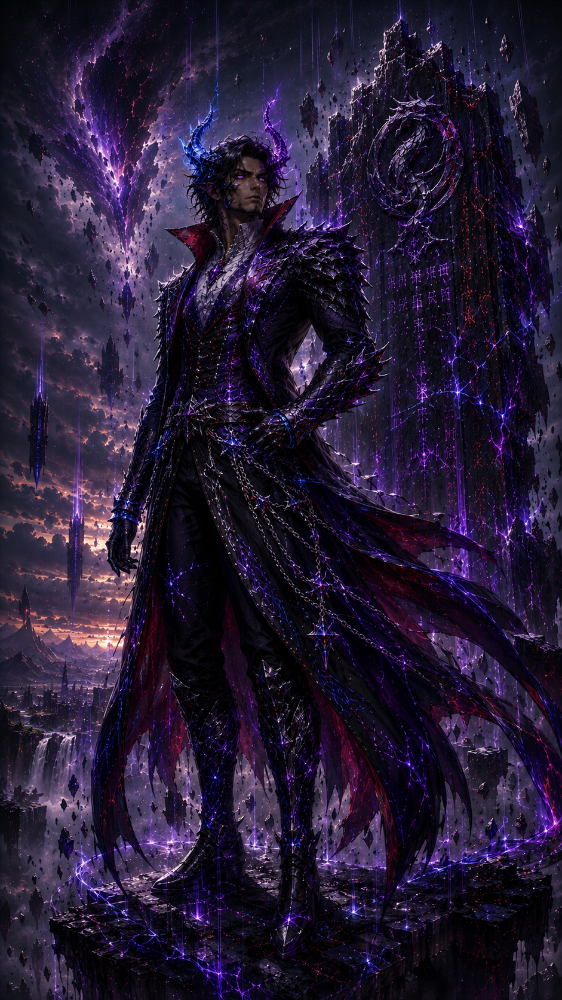
The walking sovereign form. Rhagnvyr tests potential, moves through factions, converts power structures, and turns presence into pressure.
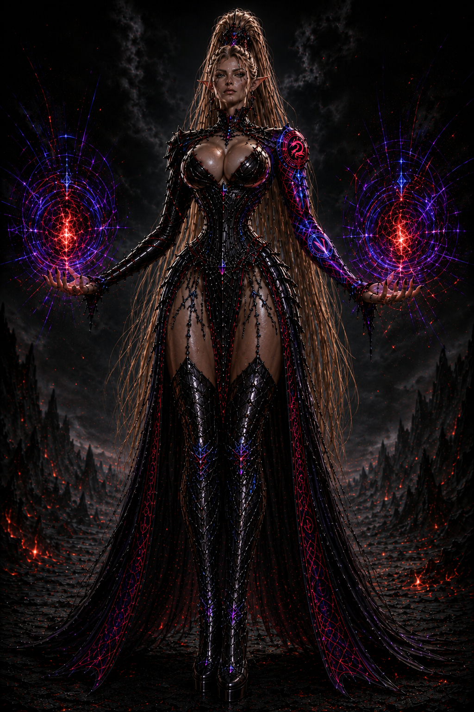
A major Apostle reference. Zeravyr helps define tattoo language, contract transformation, and the visual grammar of divine RedShift markings.
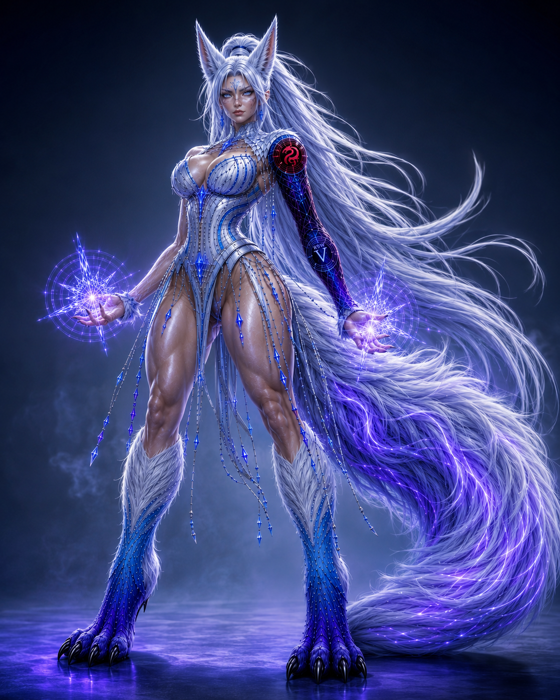
Servia is the white fox-woman Apostle ally who carries the icy blue-violet side of RedShiftWyrm’s influence. She is defined by instinct, speed, sensory awareness, rescue pressure, and protective battlefield support.
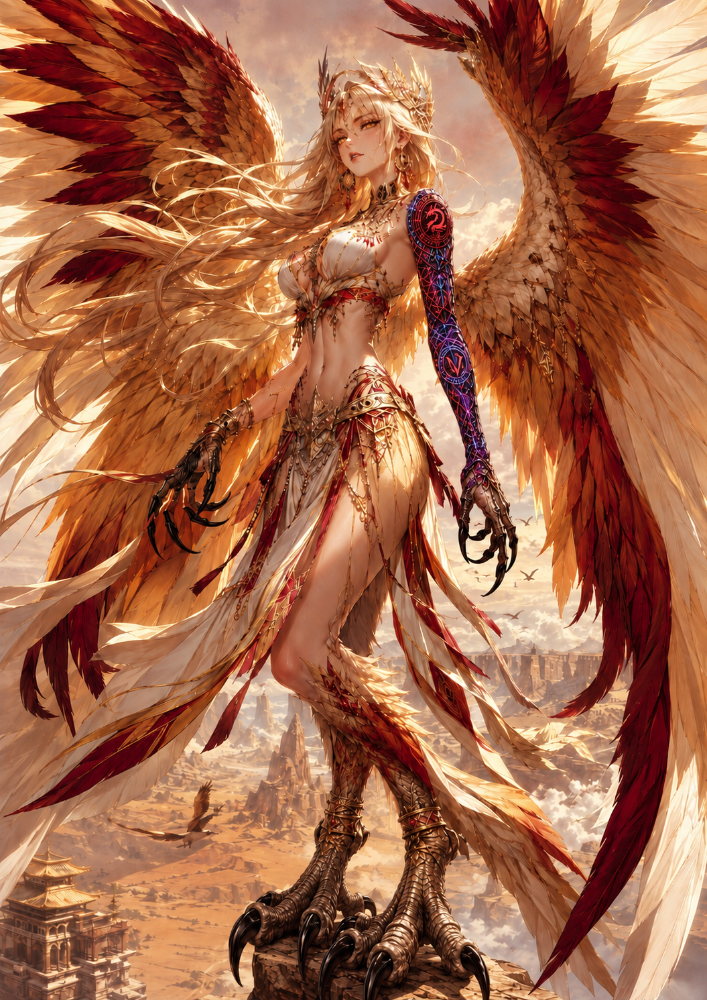
A sky-sovereign candidate. Reilana rules through wingspan, talons, flock hierarchy, queenly authority, and high-vantage territorial control.
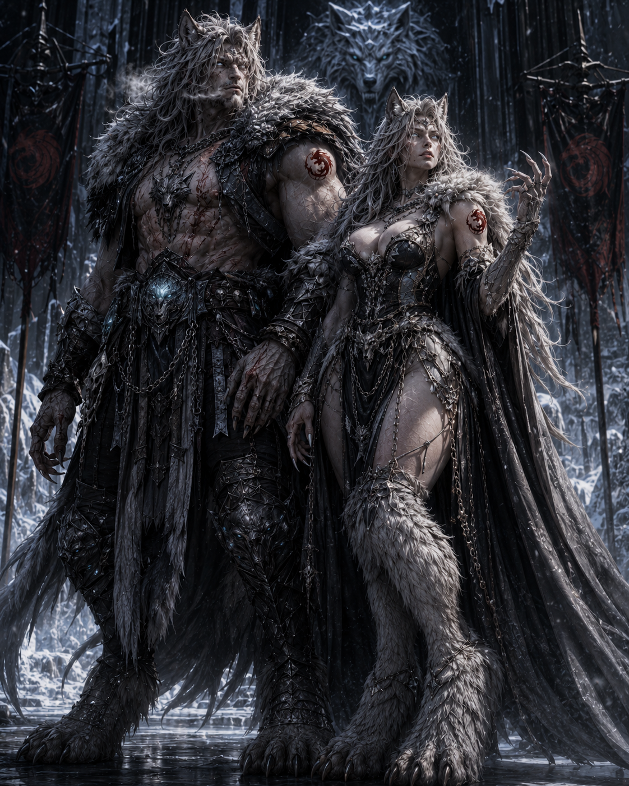
The northern clan line establishes pack loyalty, strength hierarchy, beast-kin followers, and the difference between factional assets and chosen Apostles.
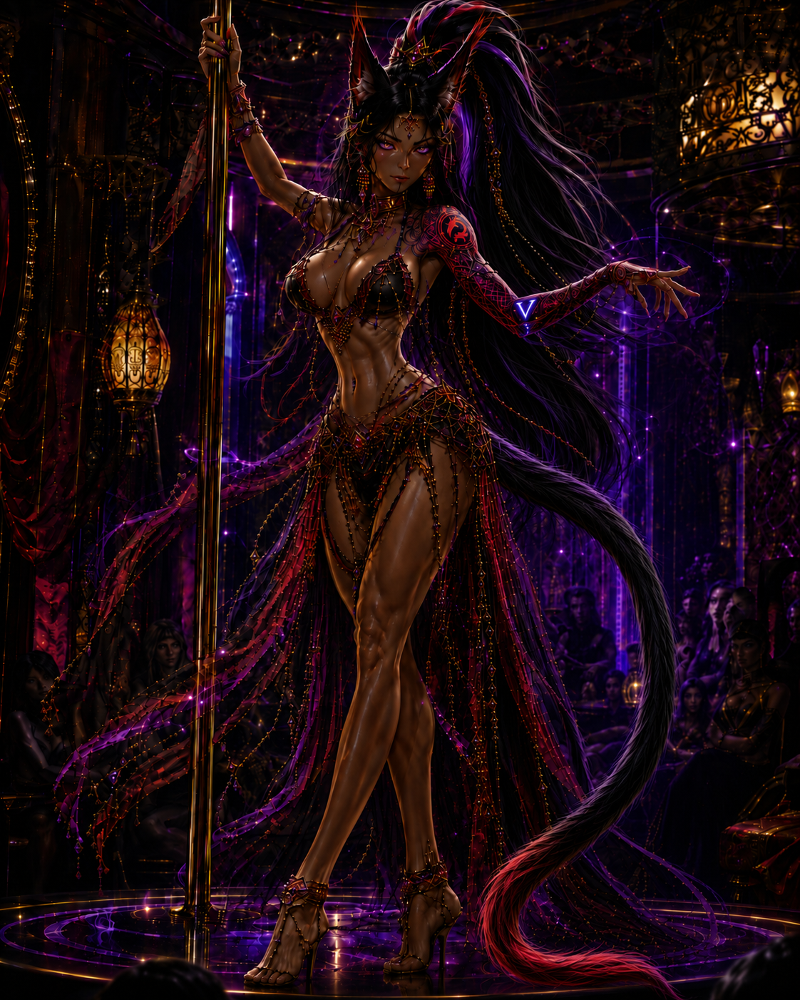
A court performer and covert influence operative. Nashara weaponizes beauty, attention, performance, secrets, and apostolic transformation.

A savage storm harpy rival from the southern ocean cliffs. Defeated by Reilana, Zephlyra becomes positioned as a future Fang of RedShiftWyrm.
The project is both a story world and a dark premium visual identity brand.
Apex cosmic dragon, gravity, transformation, dominance, redshift destruction, and divine selection.
Anime, gaming, RPGs, dark fantasy, dragons, power fantasy, mythic streetwear, and transformation identity.
Black base, crimson energy, royal violet gravity, electric blue contrast, and gold hierarchy accents.
The contract system is the lore engine. Apostles are not upgraded outfits. They are selected vessels.
Apostolic tattoos are visible covenants, power conduits, and identity seals. The red dragon sigil, violet geometry, and rune-tech energy show where RedShiftWyrm's will has taken root.
The map organizes arcs by conquest logic: god descent, battlefield pressure, northern loyalty, eastern airspace, and court infiltration.
The mythic impact point where RedShiftWyrm first enters the world and forces reality to acknowledge him.
Where Gravity Shackle and terrain domination establish Rhagnvyr as an environmental threat.
Pack hierarchy, clan loyalty, beast-kin followers, and strength-based alliance.
Reilana's aerial domain of cliffs, sky routes, desert winds, and visible queenly control.
Nashara's domain of performance, court access, seduction, espionage, and social capture.
Future arcs can expand into new factions, cities, enemy kingdoms, and divine opposition.
Use this area for future lore posts, Instagram update expansions, gallery notes, and character development logs.
The east now has two strong anchors: Reilana above, Nashara within. One commands airspace. One infiltrates rooms.
The markings are contract language: red dragon sigil, violet geometry, rune-tech structure, and role-specific transformation.
This archive can expand into individual pages, galleries, animation embeds, merch drops, and a full lore bible.
This will become the official portal for RedShiftWyrm lore, characters, visuals, development posts, and future animation or merch drops.
Return to the ThroneRedShiftWyrm Expansion
The eastern campaign expands with Nashara, the cat-kin spy Apostle sent into Blackforge territory, and Reilana, the harpy commander tested against siege-class enemies.
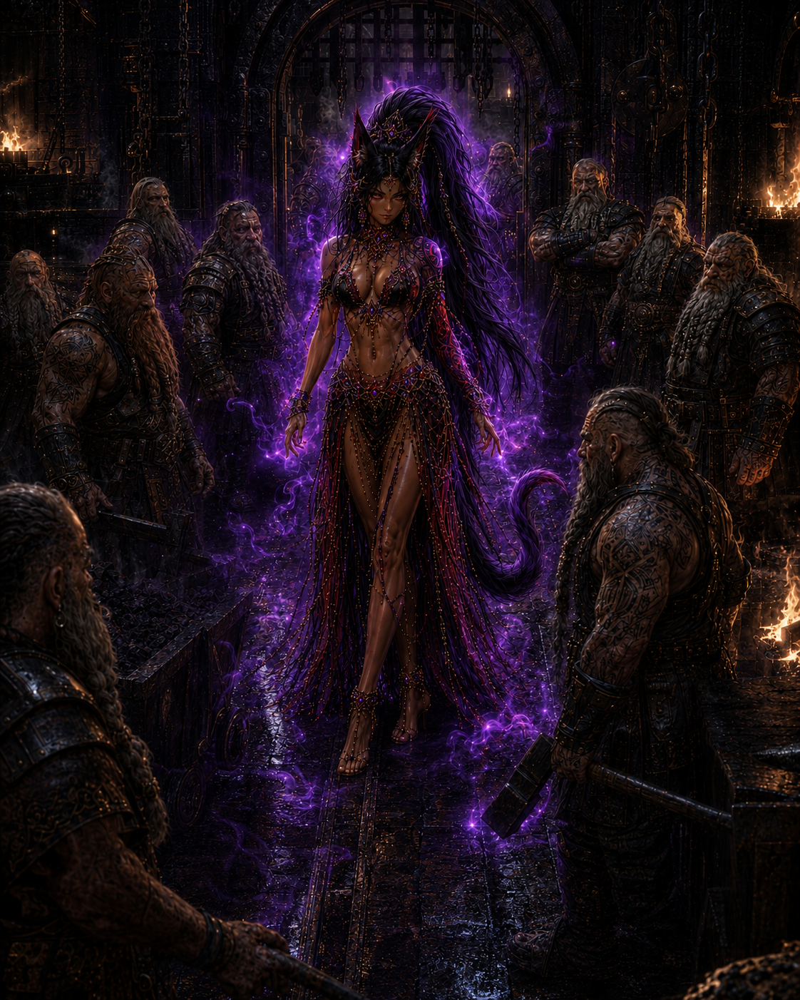
Cat-Kin Spy Apostle
Nashara enters Blackforge Hold as an outsider envoy and spy. Her mission is to investigate dwarven technology, forge culture, defensive systems, political weaknesses, and how the dwarves survived after the massacre. She carries elegance, danger, and purple gravity pressure into a place that does not welcome beastkin.

Harpy Commander
Reilana represents aerial command, battlefield pressure, and harpy doctrine in the eastern campaign. Her forces are tested against Ogre Siege-Breakers, enemies built to challenge aerial superiority through raw mass and anti-air violence.
Enemy Races & Hostile Factions
RedShiftWyrm’s world is not built only from beautiful Apostles. Enemy races and hostile factions bring ugliness, weight, resistance, brutality, and political consequence.

Enemy-Only Siege Brutes
Ogre Siege-Breakers are muddy, asymmetrical, ugly, and brutally powerful. They exist as battlefield pressure made flesh, using thrown stone, siege violence, and raw mass to test Reilana and the harpy forces.

Hostile-Neutral Hold-Dwellers
The Blackforge dwarves are not allies yet. They are short, stocky, ugly-functional, forge-built, suspicious, and deeply hostile toward beastkin and elves. Unlike ogres, they are not mindless monsters. They have culture, hierarchy, discipline, and negotiation logic.

Blackforge First Contact
Before any alliance exists, Nashara enters Blackforge Hold under hostile eyes. The dwarves do not like beastkin. They do not like elves. Dromgar Ashthumb becomes the first wall she must cross.
This encounter is not friendly diplomacy. It is a collision of cultures: Nashara’s controlled elegance and purple gravity pressure against Dromgar’s iron, soot, prejudice, and gate authority.
Gallery Update


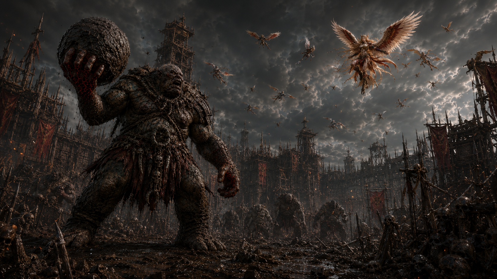
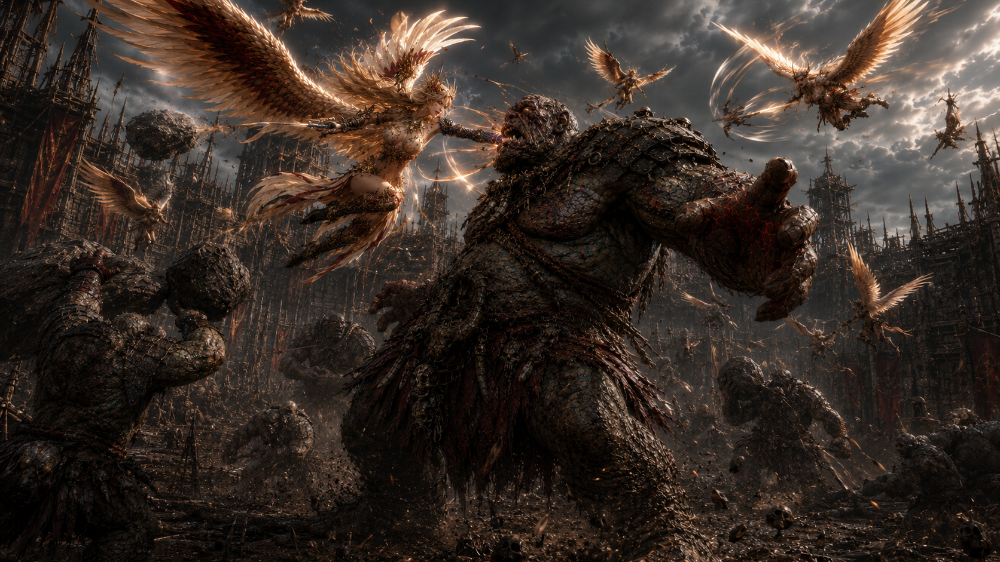

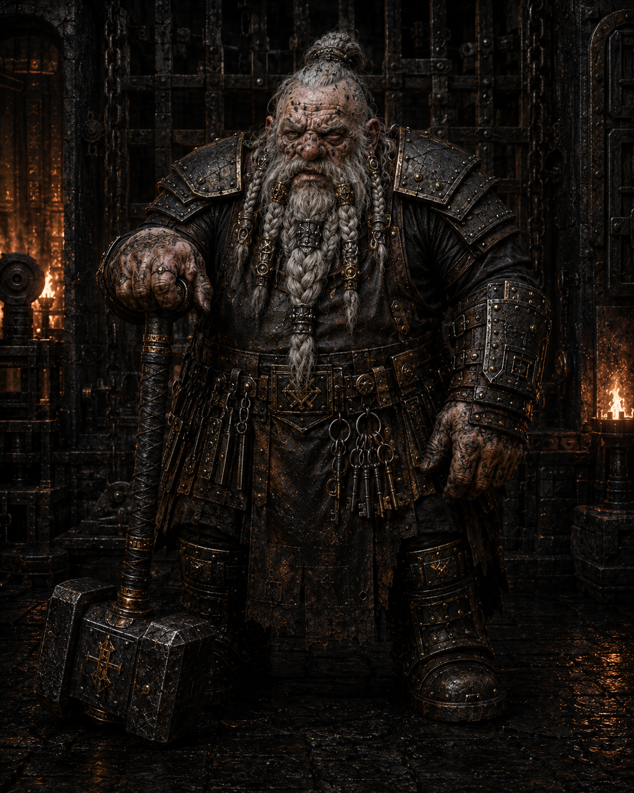

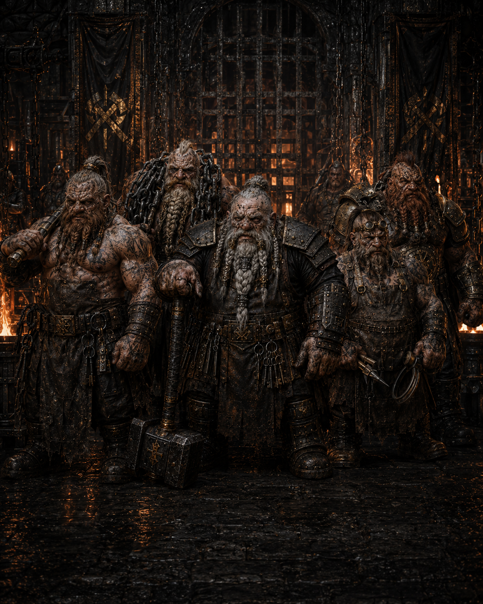
Northern Arc Enemy File 01
Spiritual death-harvester. Undead battlefield pressure. The first proof that the north is no longer merely dangerous — it is spiritually compromised.

The Grave-Tread Wraith is an elite northern undead reaper-warrior, not a beast, not a Wendigo, and not a wandering skeleton. It is a ritualistic battlefield harvester built around corpse-pinning, soul residue extraction, and dead-mana disturbance response.
Its emerald necrotic chest core, blue rune-banded arms, battle-worn pauldrons, and black-emerald-icy-blue palette mark it as a spiritual threat. Its six spectral hooves strike dead-mana circles into frozen ground, dragging its hovering lower body forward through corpse fields and ruined northern roads.
Zeravyr and Servia’s encounter with the Wraith is the northern arc’s first warning: this region is not only occupied by monsters. It is haunted by systems of death that respond, gather, and escalate.
Spiritual death-harvester and undead battlefield pressure unit. Its purpose is to extract soul residue and dead mana from corpses, not eat flesh.
Six-hoof dead-mana propulsion. Each spectral hoof strikes emerald-blue magic circles into frozen ground, pulling the body forward with ritual force.
The Wraith forces Zeravyr and Servia to recognize that northern enemies may respond in groups. Disturbance calls more death-harvesters.


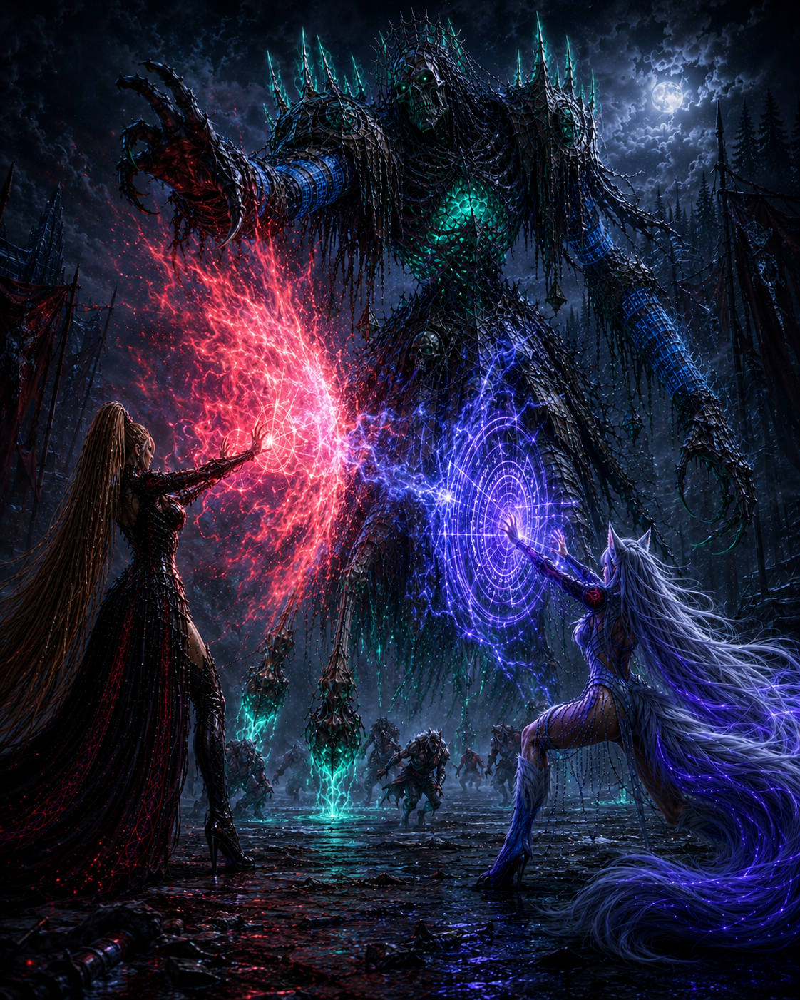
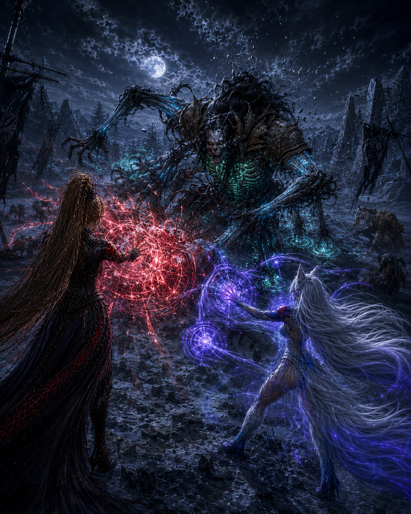
The Grave-Tread Wraith owns the spiritual horror lane of the northern arc: skeletal ritual armor, emerald necrotic core, blue rune bands, corpse-field presence, and six spectral hoof propulsion.
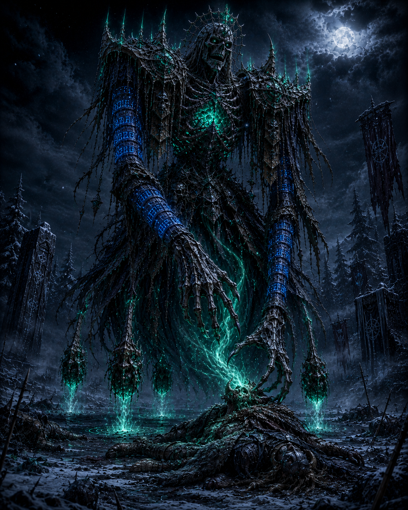


Northern Arc Enemy File 02
Physical flesh-horror. Winter cannibal predator. The second northern escalation, where the threat stops haunting the battlefield and starts hunting bodies.

The Wendigo is not a Wraith, not a spirit-harvester, and not an intelligent blood-faction enemy. It owns the physical horror lane of the northern arc: winter hunger, cannibal pressure, brute impact, and close-range survival terror.
Its body is huge, broad, and ugly, built like a frost-starved apex predator. Heavy forelimbs, torn hide, matted white fur, corpse-grey flesh, jagged claws, and green predator eyes make it feel less like a magical soldier and more like hunger wearing a body.
This encounter belongs to Servia. Her senses detect the threat first, her beginner gravity magic does not dominate it, and her role becomes survival, protection, movement, and buying seconds for the wounded wolf-kin to live.
Physical flesh-horror predator. The Wendigo exists to make the north feel unsafe at body level: ambush, impact, blood, claw pressure, and survival panic.
Its claws disrupt formed magic through violent contact. It does not outthink Apostles. It breaks distance, collapses safety, and forces immediate movement.
The Wendigo tests Servia’s senses, courage, rescue instincts, and beginner gravity control without making her overpowered or fully mastered.

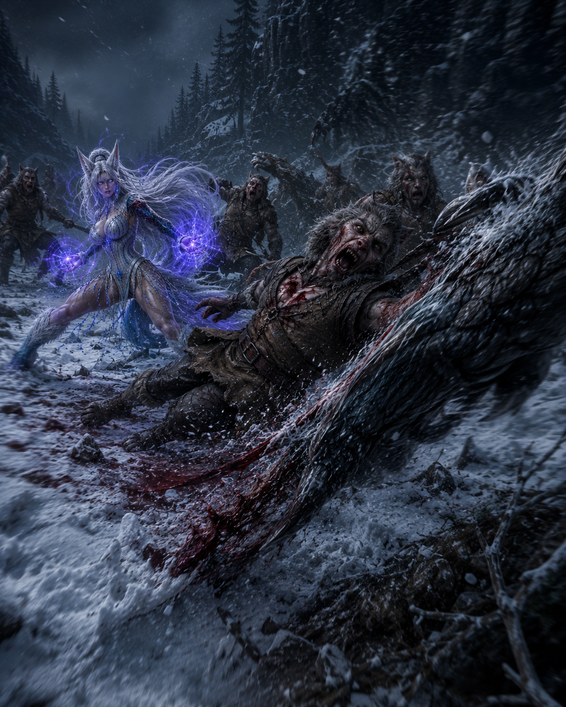

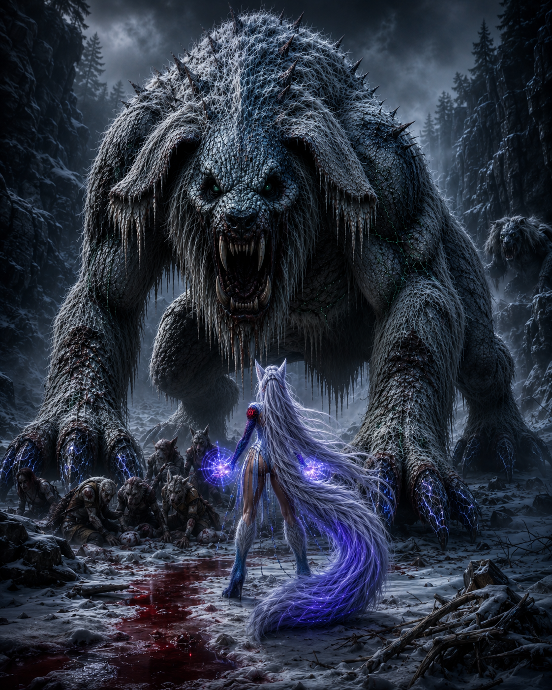
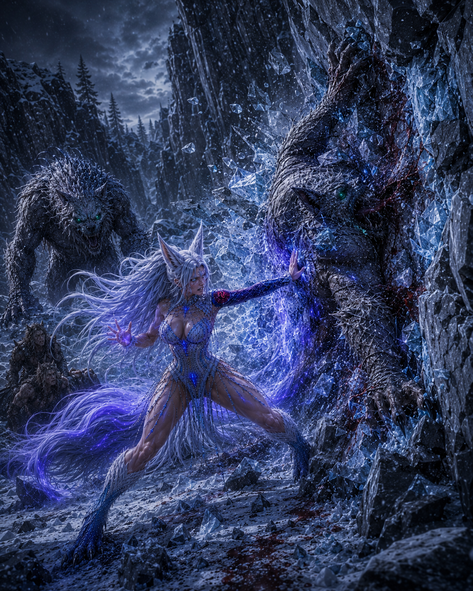
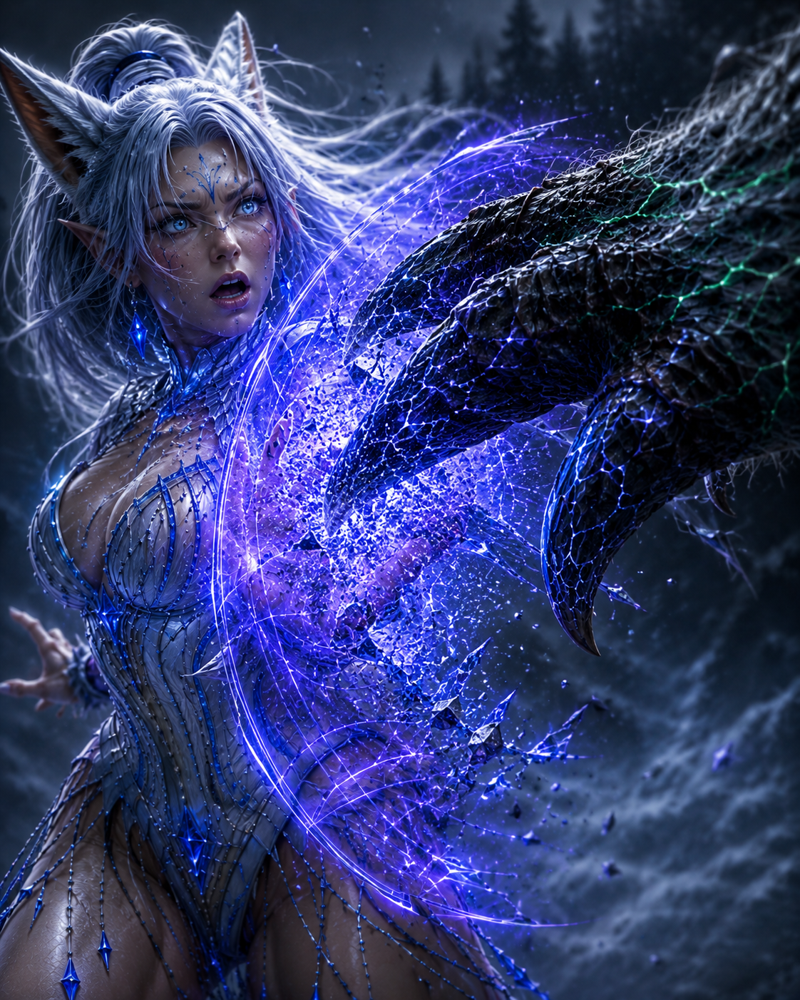
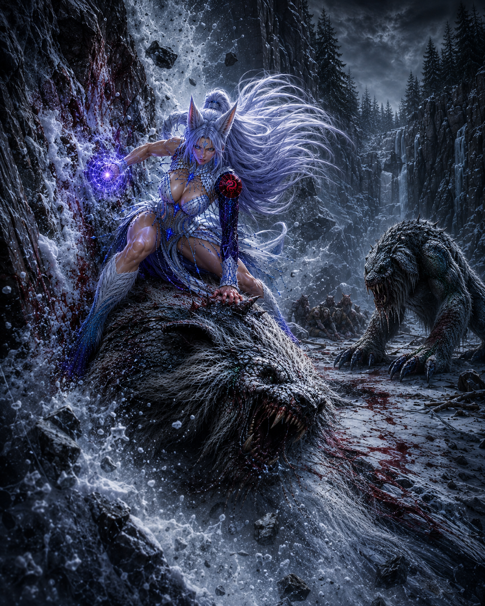

The Wendigo owns the brute predator lane: broad body mass, matted frost-fur, corpse-grey skin, huge claws, bloodied jaws, magic-disrupting impact, and ugly winter cannibal horror.

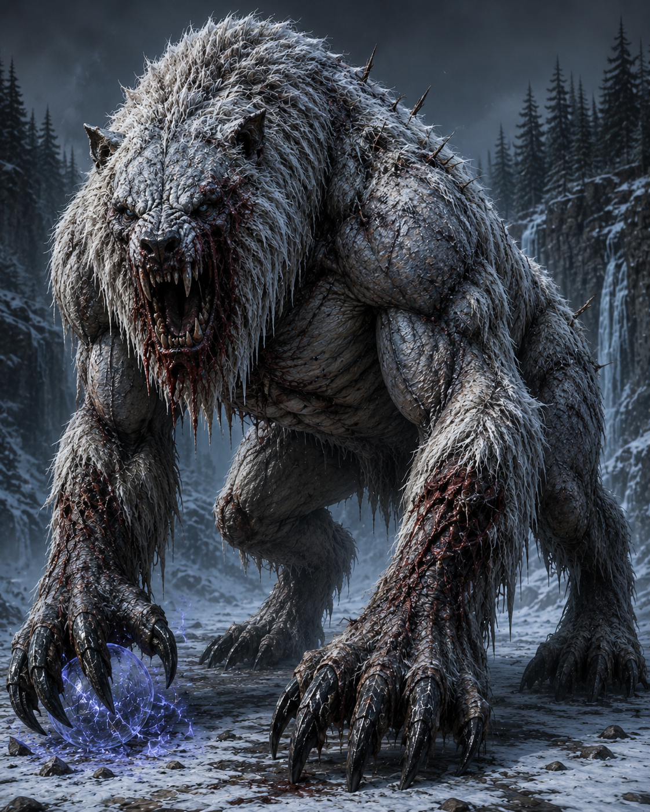

Northern Arc Enemy File 03
Intelligent blood-faction enemy. Hemogem magic, caste regalia, long-legged speed, and information warfare. The third northern escalation proves the north is not only haunted or hungry — it is watching.
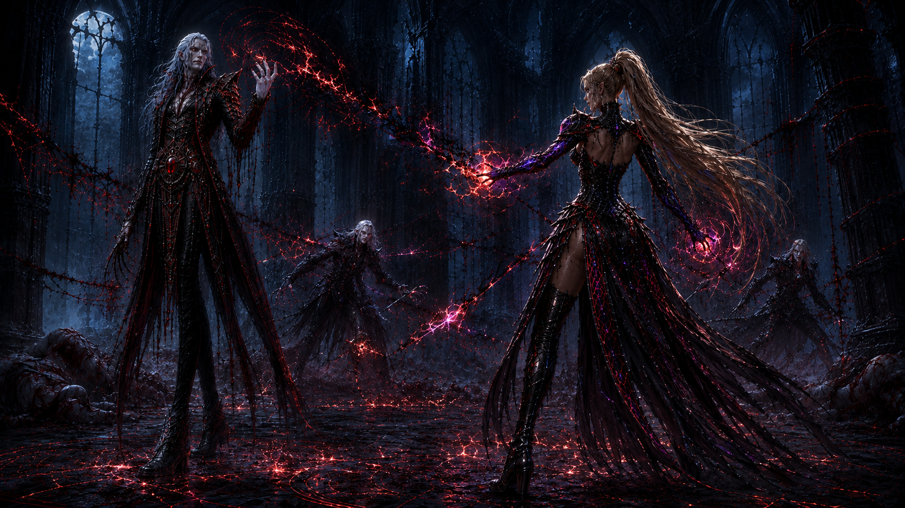
The Blood-Caste Vampire is not a romantic noble, not a beast, and not an undead mob. It is an intelligent humanoid blood-predator from an organized northern vampire civilization.
These Vampires fight through hemogems, blood-thread magic, long-legged speed, caste regalia, blood sigils, and tactical retreat. Their goal is not always immediate victory. Sometimes the true objective is to measure the enemy, survive the clash, and report what was learned.
This encounter belongs to Zeravyr. She does not treat the Vampires like monsters. She studies them back: fire severs the blood network, gravity breaks the stride, one Vampire falls, and the surviving Blood-Caste witnesses flee with information.
Intelligent blood-faction enemy. Vampires introduce social danger, caste hierarchy, battlefield analysis, and political consequence to the northern arc.
Hemogems act as blood reservoirs and magic focuses. Blood threads, needles, guards, sigils, and wound-pull lines are shaped as physical blood manipulation.
The Vampire encounter tests Zeravyr’s restraint, fire control, gravity precision, and ability to deny information to an enemy that fights to learn.


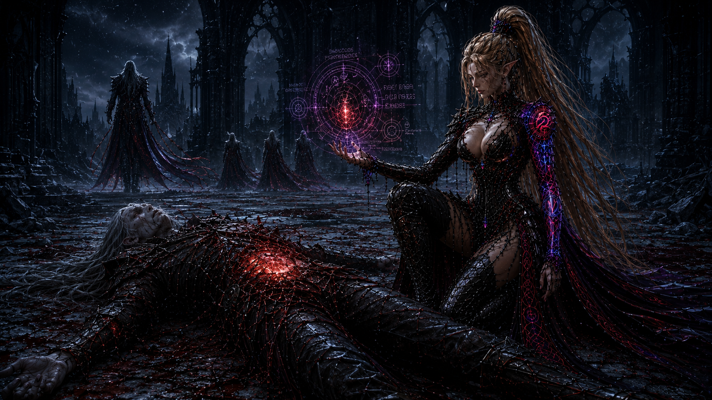
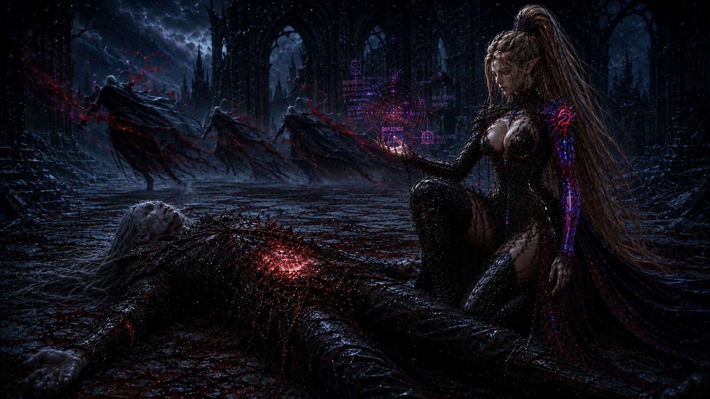
The Blood-Caste Vampire owns the intelligent predator lane: pale blue-white corpse skin, deep red eyes, overlong legs, black and dark-silver caste regalia, blood-red hemogems, authority jewelry, and precise blood-thread magic.

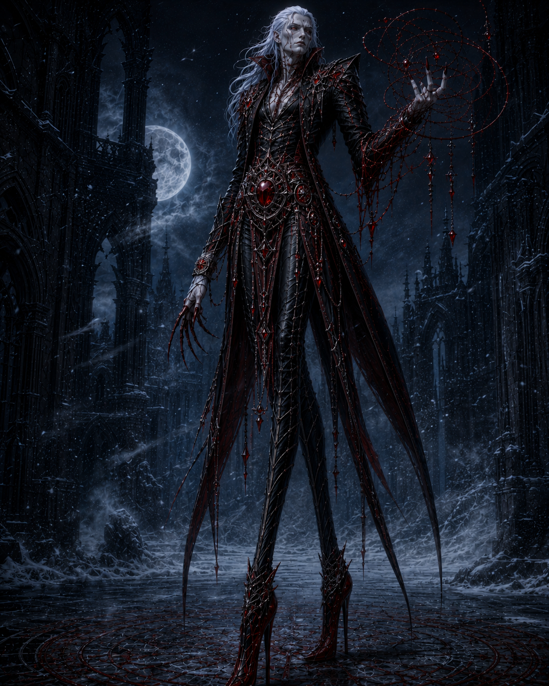